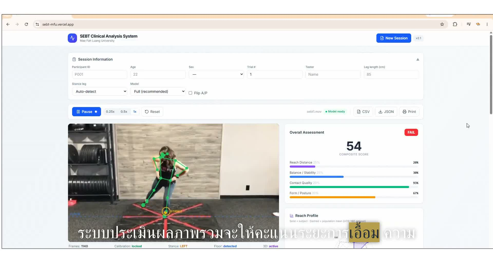

SEBT.mfu is a browser-based system that turns a phone or webcam recording of the Star Excursion Balance Test into a quantified clinical assessment — reach distance, balance stability, contact quality and movement form, scored per direction and exported as a report.

The Star Excursion Balance Test (SEBT) is a core dynamic postural-control assessment in sports medicine and rehabilitation. But running it in practice is slow, manual and examiner-dependent.
The subject stands on one leg in the centre of a star grid and reaches as far as possible with the opposite leg, then returns to the starting position — a maximal reach under single-leg balance that challenges dynamic postural control.
Each reach is recorded per direction. The key clinical metric is the normalized reach distance — the reach expressed as a percentage of the subject's leg length, which removes the effect of body size and makes scores comparable across individuals.
SEBT performance is used to screen and monitor dynamic balance in areas such as ankle instability and ACL rehabilitation, where reach asymmetry and reduced excursion signal neuromuscular deficits.
SEBT.mfu runs a complete pose-estimation analysis pipeline in the browser. A phone or webcam recording is all that is needed — no special hardware, no installed software.
A recording of the SEBT session is loaded, or analysed live from the camera.
33 body landmarks are tracked per frame with MediaPipe Pose — hips, knees, ankles and trunk.
Stance leg is auto-detected, floor and grid reference are locked, and direction orientation is verified (Flip A/P).
Each reach event is recognised per direction, with contact quality and touch impact classified.
Reach distance is computed in cm and normalized to leg length; four quality dimensions are scored.
A clinical analysis report is generated — on-screen, printable, and exportable as CSV or JSON.
This screen recording shows a complete session: loading a test video, watching the pose-tracked analysis, and reviewing the automatically computed scores and contact-level detail.
Participant ID, age, trial number, tester and leg length are entered; stance-leg detection and model (Full) are configured.
The recording plays with a live skeleton overlay. Calibration locks, stance side and floor are detected, 3D tracking activates.
A composite score is computed from four dimensions — reach distance, balance and stability, contact quality, and form — with an overall PASS / FAIL verdict.
The reach profile is compared with a population mean, per-contact events are listed (direction, reach, impact velocity, touch type), and CSV / JSON / print output is one click away.
The overall verdict and composite score are derived from four weighted dimensions, each computed from the pose and contact data captured during the session.
How far the reach leg travels in each direction, normalized to leg length — the classic SEBT excursion metric.
Quality of the single-leg stance throughout the reach: stance-foot stability and stance-heel lift behaviour.
How cleanly the reach foot touches down — classified as soft or hard contact from impact velocity and bounce.
Movement control during the task, including trunk lean and overall posture consistency across trials.
Each direction is scored independently and visualised on a reach profile, so asymmetry between directions and between left and right stance legs is immediately visible.
The subject's profile can be compared against a population reference — the in-app comparison uses an open Y-Balance test dataset (University College Dublin).
Every reach event is recorded in a table with direction, reach (as % of leg length), impact velocity, bounce, quality, and a measurement-confidence value that reflects how many contact frames were directly observed.
| Direction | Reach | Impact vel. | Touch |
|---|---|---|---|
| Anterior | 62% leg | −0.34 | soft |
| Anteromedial | 68% leg | −0.32 | soft |
| Anterior | 48% leg | −2.38 | hard |
Sample rows from the app's contact-events table (illustrative values from the demo recording).
SEBT.mfu is a web application — open a URL, grant camera access, and the full clinical analysis is available. No installation, no plugins, no server-side processing.
MediaPipe Pose Landmarker estimates 33 body landmarks per frame, with selectable Full / Heavy / Lite models to trade accuracy against device performance.
Built with React and Vite, styled with Tailwind CSS, and deployed on Vercel — a responsive single-page experience for desktop, laptop and mobile browsers.
Scores, per-direction results and contact events are compiled into a printable clinical report, with CSV and JSON export for research records and further analysis.
The test protocol, normalization method and composite-score approach follow the established SEBT literature.
This project started from a simple observation: the balance tests that physiotherapists and sports-medicine clinicians use every day still rely on tape measures and handwritten notes. Computer vision has reached the point where the same measurements can be extracted automatically from an ordinary video.
SEBT.mfu is a working demonstration of that idea — a full analysis pipeline that any clinic can run from a web browser, with outputs that follow the published clinical method.